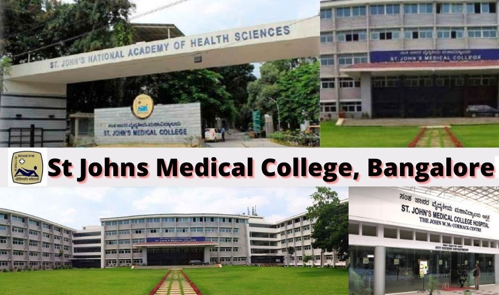

Education
- 1988 to 1992 - St. Johns Medical College & Hospital Bangalore, India - General Nursing & Midwifery
- Nursing Administration from Medvarsity
Additional Courses/Qualification
- Nursing Excellence
- Therapeutic Communication in Nursing
- ISO 9001:2008 Internal Auditor Training
- Basic & Advance Life Saving Technique
- Nursing Management & Leadership Course
- JCI / NABH Training
- NABH Safe I Training
- Fire Safety Training
- Disaster Management Drill
- Waste Management
- HAZMAT Training Programme
- Soft Skill Training
- Quality Improvement & Patient Safety
- Delivering Service Quality
- Effective Communication
Conferences/Seminars/Workshops
- Attended one day conference on quality care in nursing in the year 2009
- Attended seminars on Team building Leadership, Time management, Conflict Management, and Stress management in the year 2010
- Attended the 1st National Conference of Infusion Nurses Society India on April 13th and 14th, 2012
- Attended two days nursing conclave on Caring with Confidence – Building
People on May 10th and 11th 2012
- Attended one day workshop on Pressure area Management by ArjoHuntleigh
Health care on 10/09/2012
- Organized one day Orthopaedic Nursing Workshop on 17/10/2012
- Organized one day Neuro Nursing Workshop on November 2012
- Actively participated on Communication Carnival on Dec 2012
- Participated one day Workshop on Renal Transplant on Dec 2012
- Attended two days International patient safety conference on Sept 2013
In Hyderabad
- Done certificate course on ISO 9001:2008 Internal Auditor on August 1st& 2nd
2014.
- Attended one day workshop on Legal & Ethical issues in contemporary Nursing Organised by Amen Group
- Attended workshop on Patient safety – Starts with me
- Attended one day conference o new pathways in clinical nursing practice and research: lighting a spirit of exploration on Feb 2020, won the award for best poster presenter.